Ajustar dimensiones y limpiar el archivo
Abre el archivo del objeto generado con IA en tu software de modelado 3D (como SketchUp), ajusta su tamaño de acuerdo a las dimensiones reales y elimina cualquier geometría residual u otros objetos secundarios para dejar la escena completamente limpia.
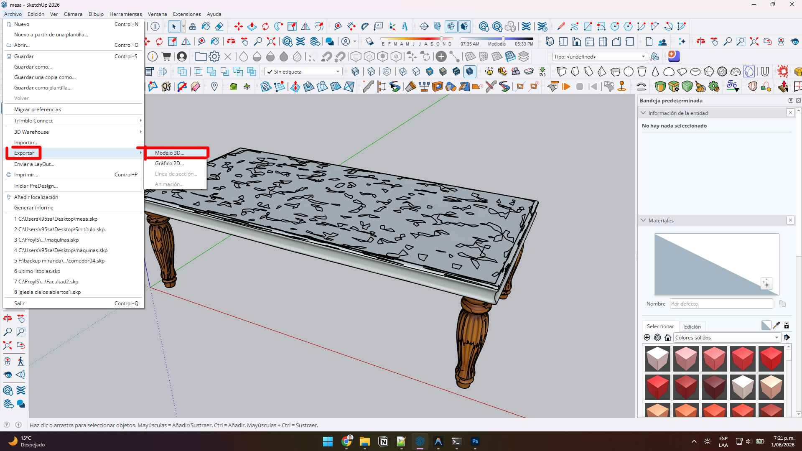
Exportar en formato FBX
Exporta el objeto limpio y escalado a dimensiones reales como un archivo .fbx. Este formato es ideal porque empaqueta de forma ordenada la malla poligonal y preserva las coordenadas del mapeado de materiales.
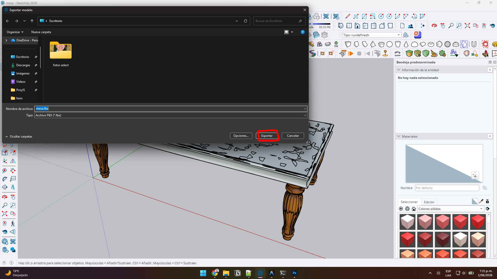
Configurar almacenamiento local en SketchUp
Abre el archivo del proyecto principal o un nuevo modelo en SketchUp. Configura la ruta de guardado en el panel de Enscape Custom Asset Editor seleccionando carpetas locales organizadas, tales como: 'Enscape 3D v4 Offline Assets' con las subcarpetas '/assets' y '/exported'.
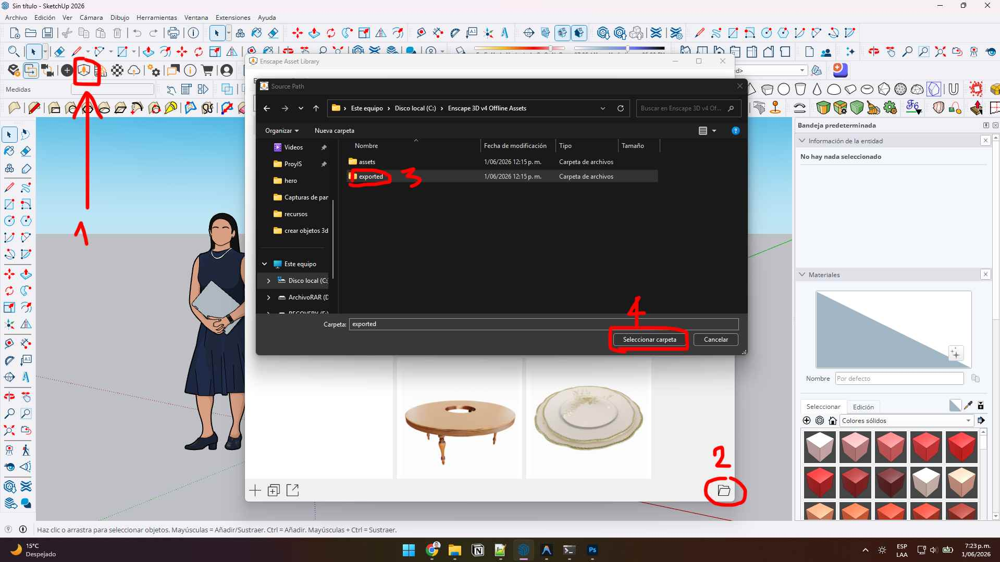
Crear un nuevo Custom Asset
Haz clic en el botón de agregar (+) en el Custom Asset Editor de Enscape para iniciar el asistente de creación de tu marcador o proxy personalizado.
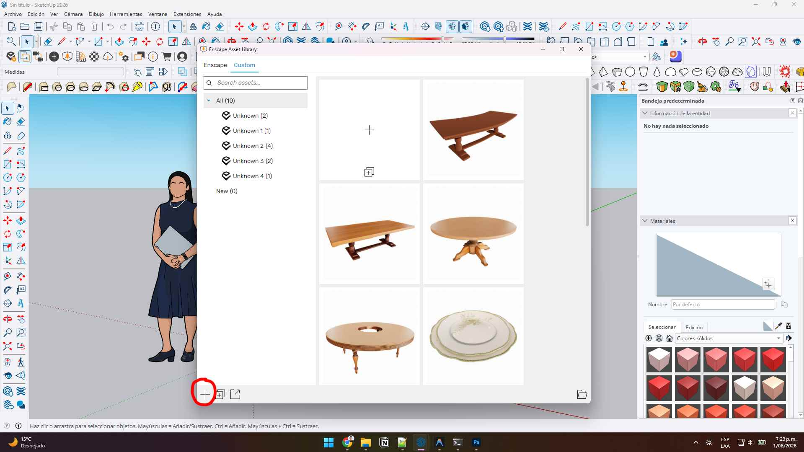
Definir metadatos e importar geometría
Asigna un título y una categoría temática a tu nuevo asset para mantenerlo organizado. Luego, haz clic en el botón 'Import Geometry' y selecciona el archivo .fbx de alta fidelidad que exportaste previamente en el Paso 2.
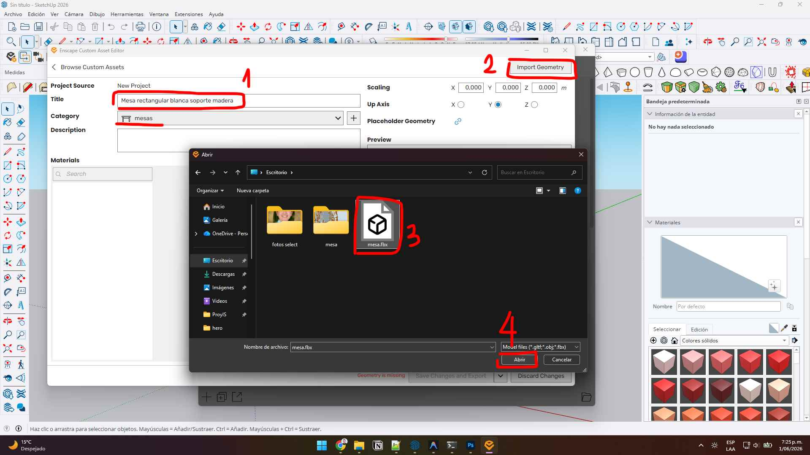
Optimizar texturas y propiedades de materiales
Configura minuciosamente el aspecto y realismo de los materiales de tu asset en el editor. Ajusta el tono del albedo, el relieve (Bump map), la rugosidad (Roughness) y la reflexión (Specular) para lograr un acabado fotorrealista excelente.
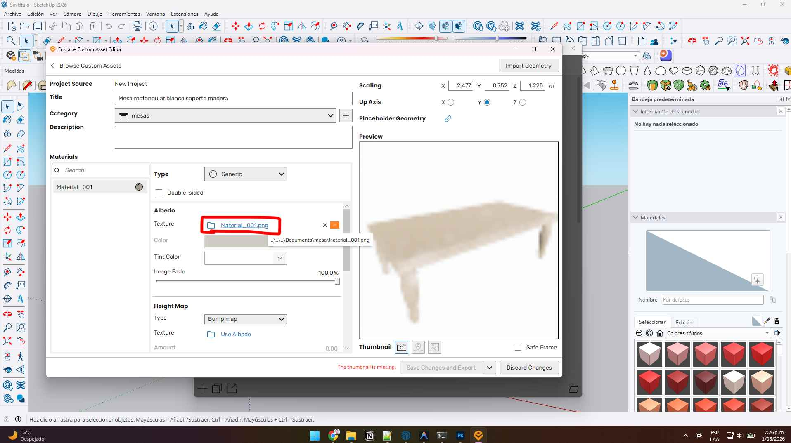
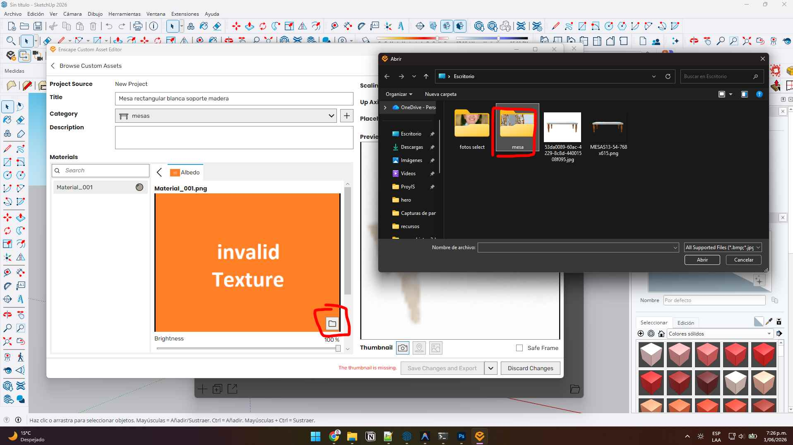
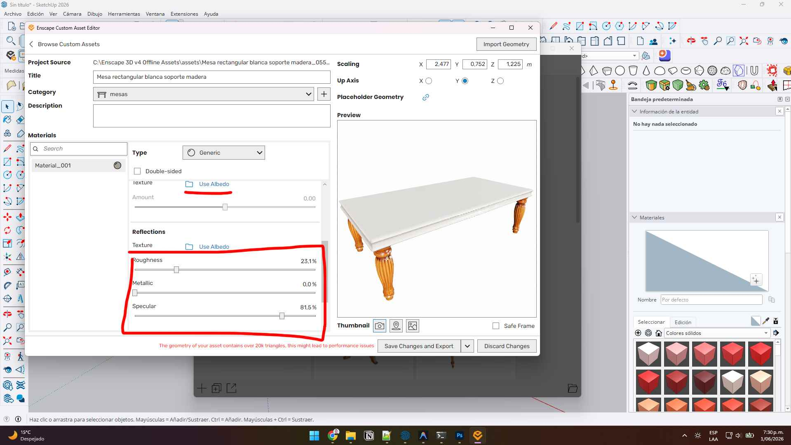
Capturar miniatura del Asset
Utiliza la herramienta de captura integrada en el creador de assets de Enscape para tomar una miniatura (thumbnail) de tu modelo, o sube una imagen personalizada que sirva como previsualización visual en la biblioteca local de SketchUp.
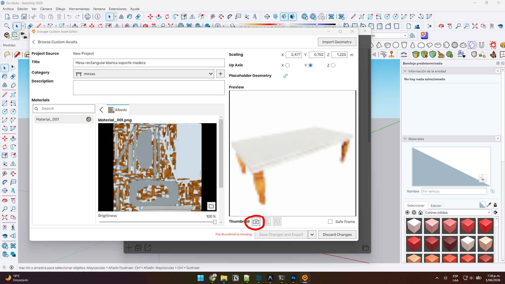
Guardar y exportar el Proxy
Haz clic en el botón 'Save changes and export' para procesar el asset y exportar el componente proxy liviano. Una vez finalizado el proceso de exportación, puedes cerrar el asistente de Enscape.
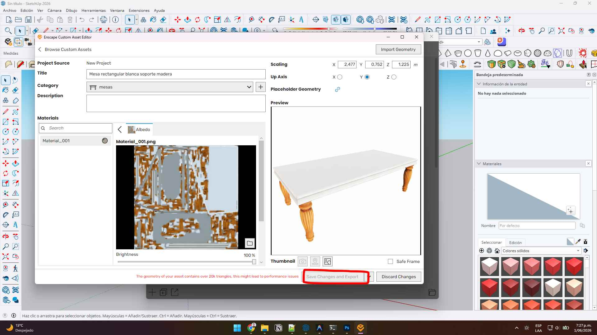
Importar a la escena principal de SketchUp
Haz clic en el botón verde de tu asset personalizado recién creado para colocarlo en tu escena de SketchUp. Notarás que se carga un modelo proxy ultra liviano para mantener el viewport fluido, el cual se renderizará automáticamente en tiempo real con la máxima geometría detallada del FBX.
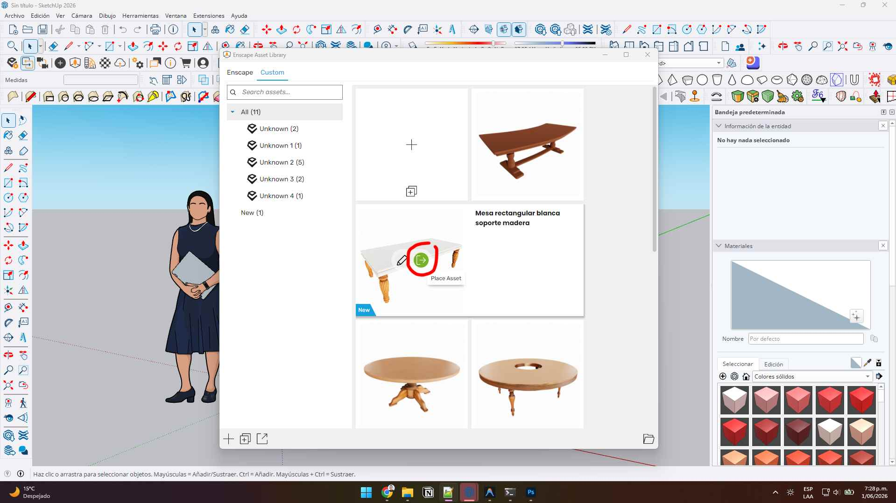
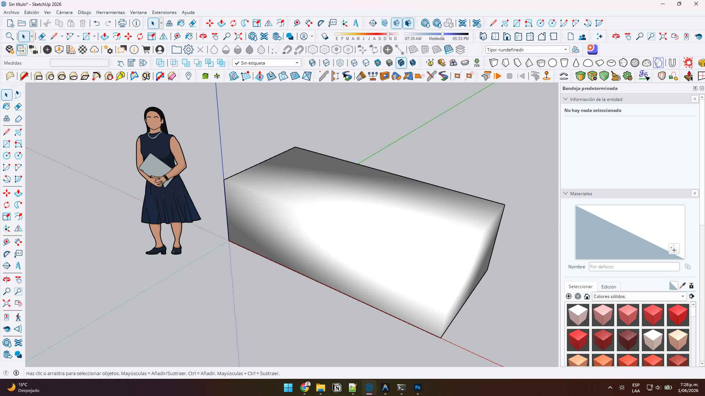
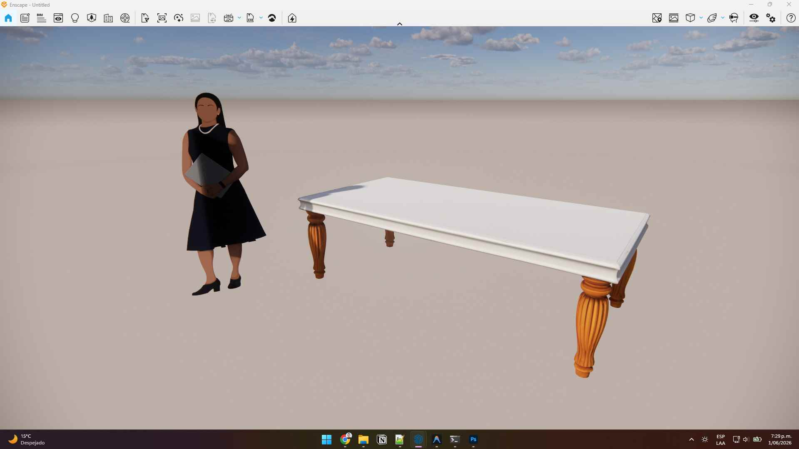
Optimización Extrema: ¿Por qué los Proxies de Enscape son la solución definitiva a tu SketchUp lento?
Si eres arquitecto, diseñador de interiores o visualizador 3D, seguro que te has enfrentado al frustrante problema de un SketchUp lento. Al incorporar mobiliario hiperrealista, árboles con miles de hojas, sillería detallada o elementos decorativos complejos, la memoria RAM se satura y la pantalla comienza a trabarse. La solución no es recortar el realismo de tus escenas, sino implementar un flujo de trabajo inteligente mediante la creación de proxies en Enscape.
El Secreto detrás de los Proxies de Enscape 3D v4
Un proxy (o marcador de posición) es, en esencia, un componente extremadamente liviano en SketchUp que actúa como un contenedor para un archivo de geometría de altísima calidad guardado en tu disco duro (usualmente un archivo FBX u OBJ). Cuando estás modelando en la interfaz de SketchUp, solo ves una caja simple o un objeto de muy pocos polígonos, lo que permite moverte por la escena en 60 FPS sin ningún tipo de retraso. Sin embargo, al iniciar el motor de renderizado de Enscape 3D, este reemplaza dinámicamente el marcador liviano por el modelo hiperrealista con todas sus texturas PBR de alta definición. ¡El resultado es un render fotorrealista perfecto y un espacio de trabajo sumamente fluido!
💡 ¿Cómo estructurar tus Custom Assets locales?
Para garantizar que Enscape nunca pierda la vinculación de tus texturas ni la geometría al renderizar, organiza tu biblioteca en carpetas locales dedicadas e inmutables. Lo más recomendable es centralizarlas en una ruta de almacenamiento externa o en una partición de tu disco principal, por ejemplo: C:\Enscape 3D v4 Offline Assets\. Divide esta carpeta principal en dos secciones claras: una para los archivos fuente (modelos FBX y texturas de alta resolución) y otra para los metadatos exportados por el Custom Asset Editor.
Ventajas clave de usar Proxies en tus proyectos arquitectónicos
- Optimización de memoria RAM: Reduce drásticamente el peso de tu archivo .skp (de 500MB a menos de 20MB), evitando molestos cierres inesperados y "pantallazos azules" de memoria.
- Rendimiento impecable en el viewport: Realiza modificaciones en tiempo real, rota cámaras y edita muros en SketchUp sin lidiar con tiempos de carga agotadores.
- Organización y reutilización: Crea tu propio catálogo personalizado de marcas comerciales locales de mobiliario o decoración, lo que le aportará una capa extra de exclusividad y realismo a tus renders.
- Renders más rápidos: Enscape carga los assets directamente en la tarjeta de video únicamente al renderizar, lo que agiliza el cálculo del trazado de rayos (Ray Tracing) y la iluminación global.
Dejar atrás el viewport trabado y el flujo ineficiente está a solo unos pasos de distancia. Integrando la técnica de creación de proxies en Enscape junto con modelados optimizados, llevarás tu productividad y la calidad visual de tus renders de arquitectura al siguiente nivel profesional.
¿Quieres delegar tu renderizado 3D?
Si tienes proyectos con cronogramas exigentes, confía en profesionales. Entregamos visualizaciones estéticas de alto impacto en tiempo récord.